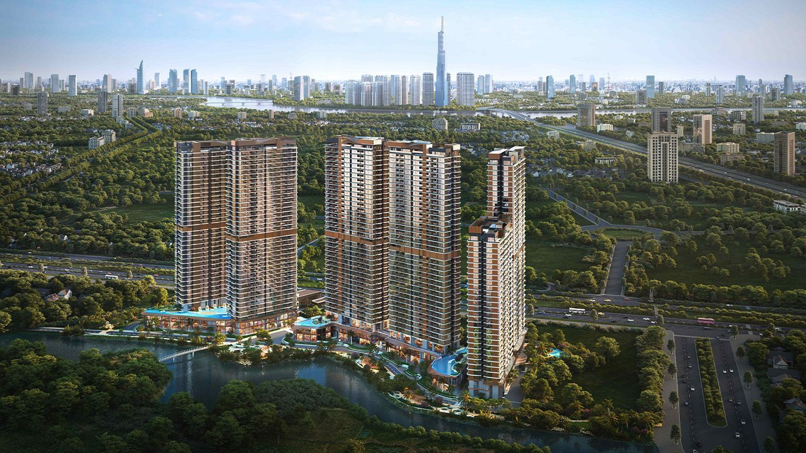
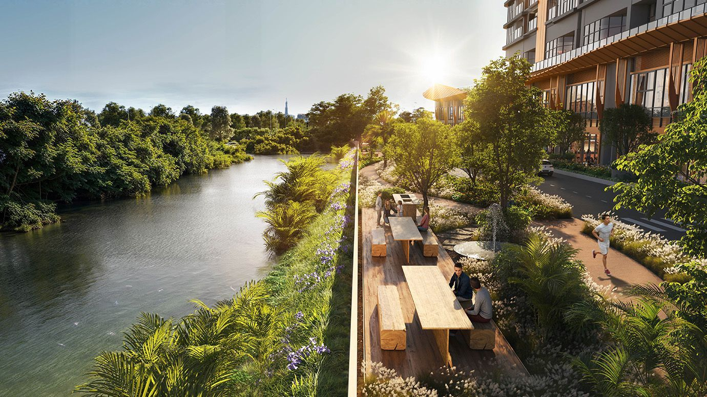
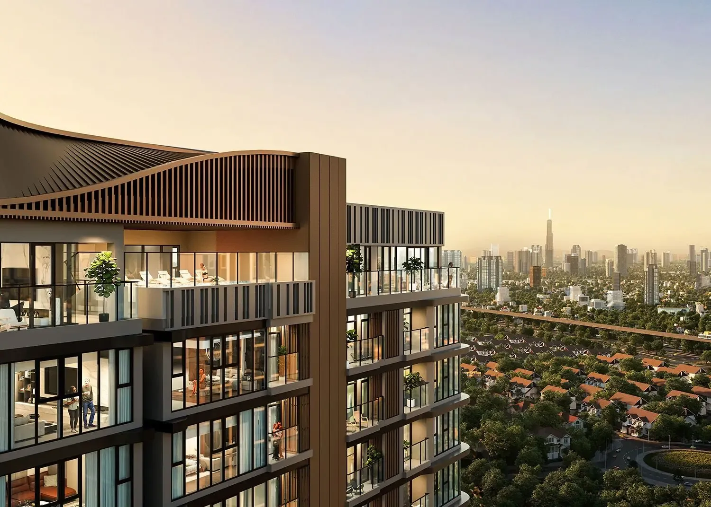
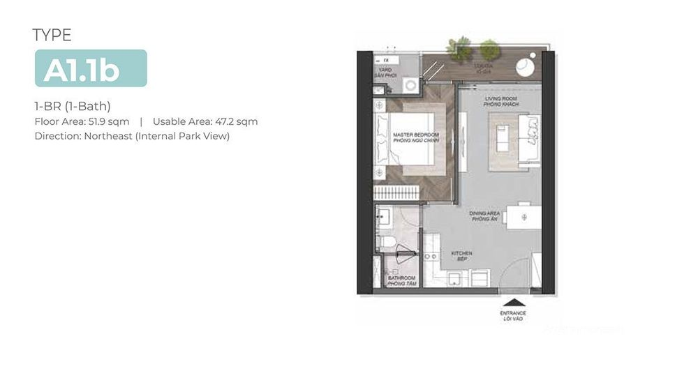

Eaton Park (Thủ Đức): giá khởi điểm khoảng 120 triệu/m² có hợp lý không?

1. Tóm tắt nhanh
≈ 4.610 USD/m²
≈ 4.050 USD/m²
Mức: hơi cao
Với căn 2 phòng ngủ khoảng 72 m² thông thủy, giá khởi điểm tương ứng khoảng 8,6 tỷ đồng, trong khi giá hợp lý khoảng 7,6 tỷ đồng, tức chênh khoảng 1,0 tỷ. Nếu giá 120 triệu/m² chưa gồm VAT 10%, giá thực tế là khoảng 132 triệu/m² (9,5 tỷ) và chênh lệch lên khoảng +25%. Vì chưa rõ cách tính, kết luận bên dưới có biên sai số lớn.
2. Vị trí
Eaton Park nằm trên đại lộ Mai Chí Thọ, khu vực An Phú – Bình Trưng (Quận 2 cũ), TP. Thủ Đức, gần nút giao An Phú và ga Rạch Chiếc của Metro số 1, cách Quận 1 khoảng 15 phút di chuyển theo giới thiệu của chủ đầu tư. Dự án nằm cùng trục Mai Chí Thọ với Palm City, nên chúng tôi dùng cùng hai dự án đối chiếu như bài Palm River để các kết quả so sánh được với nhau.
3. Sản phẩm
| Hạng mục | Thông tin |
|---|---|
| Đơn vị phát triển | Gamuda Land (Malaysia); một nguồn ghi Tâm Lực là chủ đầu tư pháp lý |
| Quy mô | Khoảng 3,77 ha, khoảng 2.000 sản phẩm, nhiều tháp (một nguồn ghi 6 tháp, cao tới 39 tầng) |
| Diện tích | Từ 50,7 đến 406,2 m² (căn hộ, penthouse, shop chân đế, shophouse); giá từ 5,5 tỷ |
| Thi công | Khởi công khoảng tháng 3/2024, Coteccons là tổng thầu, đã cất nóc kết cấu |
| Bàn giao | Dự kiến năm 2027 (một nguồn ghi quý I, nguồn khác ghi từ quý III/2027) |
| Thanh toán | Lộ trình dài tới 5 năm theo thông tin sự kiện ra mắt |



4. Kiểm tra giá và so sánh
Giá khởi điểm đăng ở các trang thông tin là 115–125 triệu/m² thông thủy (một bảng giá cập nhật 11/2025 ghi từ 120 triệu/m²); bài dùng 120 triệu/m². Giá rao bán lại hiện có khoảng 127–160 triệu/m² (ví dụ căn 2PN 72 m² khoảng 129 triệu/m², căn 3PN 103,7 m² khoảng 160 triệu/m²), nhưng chỉ có vài tin nên không dùng làm chuẩn. Hai dự án đối chiếu và số liệu giá thị trường lấy lại từ bài Palm River (tin rao trên batdongsan.com.vn ngày 31/10/2026):
| Dự án | Số tin | Trung vị giá rao | Giá thị trường (×0,95) | A | Giá điều chỉnh |
|---|---|---|---|---|---|
| Lumière Riverside (Thảo Điền) | 13 | 157,2 | 149,3 | +16% | 125,4 |
| Palm Heights (Palm City) | 9 | 98,7 | 93,8 | +9% | 85,3 |
| Giá hợp lý | 105 |
Lưu ý về độ lệch. Hai giá điều chỉnh chênh nhau khoảng 38% (125,4 so với 85,3), vì Lumière nằm ở Thảo Điền còn Palm Heights đã khoảng 8 năm tuổi. Chúng tôi giữ nguyên cả hai và dùng trung bình thay vì chọn lại, nên kết luận có biên sai số lớn. Palm Heights chỉ có 9 tin, thấp hơn mức tối thiểu 10 tin.
Bảng điều chỉnh chi tiết
| Yếu tố | Lumière | Palm Heights | Căn cứ |
|---|---|---|---|
| Khoảng cách tới CBD | +5 | 0 | Thảo Điền gần trung tâm hơn khu An Phú – Bình Trưng; Palm Heights cùng trục Mai Chí Thọ |
| Giao thông | 0 | 0 | Cùng gần Metro số 1 và trục Mai Chí Thọ; chưa phân bậc |
| Quy mô đô thị | 0 | +5 | Palm Heights nằm trong Palm City (~30 ha), lớn hơn Eaton Park (~3,8 ha); Lumière đứng riêng |
| Tiện ích khu vực | +5 | 0 | Hệ sinh thái Thảo Điền đầy đủ hơn; Palm City cùng khu với Eaton Park |
| Uy tín chủ đầu tư | 0 | 0 | Gamuda Land có hồ sơ lâu năm tại Việt Nam, tương đương hai bên |
| Pháp lý / tài chính (danh sách kiểm tra) | +8 | +8 | Hai dự án đã bàn giao, có sổ hồng; Eaton Park đang xây, 4 mục pháp lý chưa kiểm chứng (mỗi mục 2%) |
| Mặt bằng / tiện ích nội khu | 0 | 0 | Chưa có căn cứ để chấm chênh lệch |
| Tuổi công trình | −2 | −4 | Chênh năm nhận nhà so với 2027: Lumière ~4 năm, Palm Heights ~8 năm; 1 điểm % mỗi 2 năm |
| Quy mô dự án | 0 | 0 | Chưa đặt ngưỡng; tạm tính 0 |
| View | 0 | 0 | Chưa chuẩn hóa định nghĩa; tạm tính 0 |
| Tổng điều chỉnh (A) | +16% | +9% | Dấu + nghĩa là đối chiếu tốt hơn Eaton Park |
5. Kiểm tra nguồn cung & pháp lý
- Danh sách dự án đủ điều kiện bán nhà hình thành trong tương lai (Sở Xây dựng): chưa kiểm chứng.
- Bảo lãnh ngân hàng, hình thức sở hữu, hạn mức người nước ngoài: chưa kiểm chứng.
- Giấy phép xây dựng và quy hoạch 1/500: chưa kiểm chứng.
- Thi công: có thông tin khởi công 3/2024 và cất nóc; mốc bàn giao ghi khác nhau giữa các nguồn.
- Các mục chưa kiểm chứng được tính điểm rủi ro như trên; nếu kết quả kiểm tra sau này xấu, giá hợp lý sẽ thấp hơn.
6. Kết luận
Với giá khởi điểm 120 triệu/m², Eaton Park đang hơi cao hơn giá hợp lý khoảng 14%, nằm sát ngưỡng "cao" (trên 15%). Nếu mức giá này chưa gồm VAT thì chênh lệch lên khoảng 25%. Giá rao bán lại 127–160 triệu/m² cho thấy thị trường thứ cấp đang cao hơn giá mở bán, nhưng mẫu quá ít để kết luận. Người mua nên chờ bảng giá chính thức, hỏi rõ cách tính diện tích và VAT, và kiểm tra pháp lý trước khi đặt cọc.